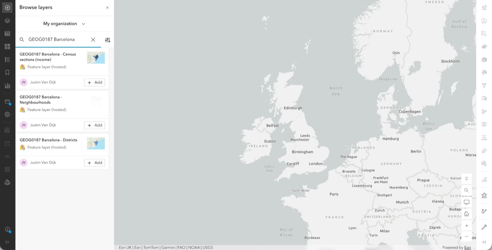
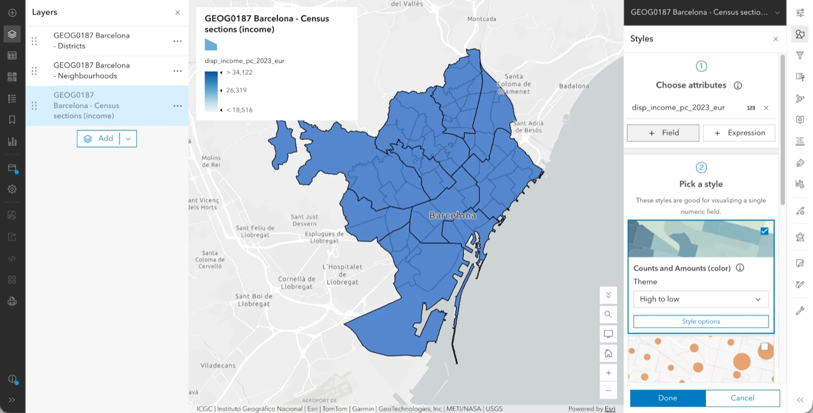
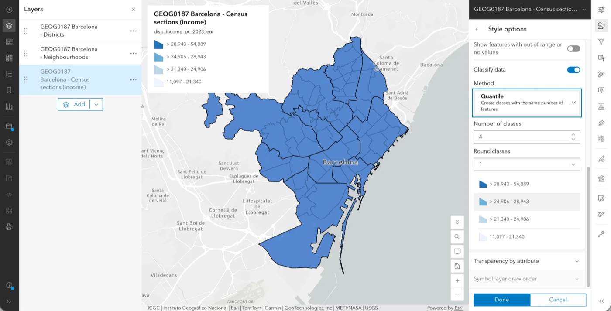
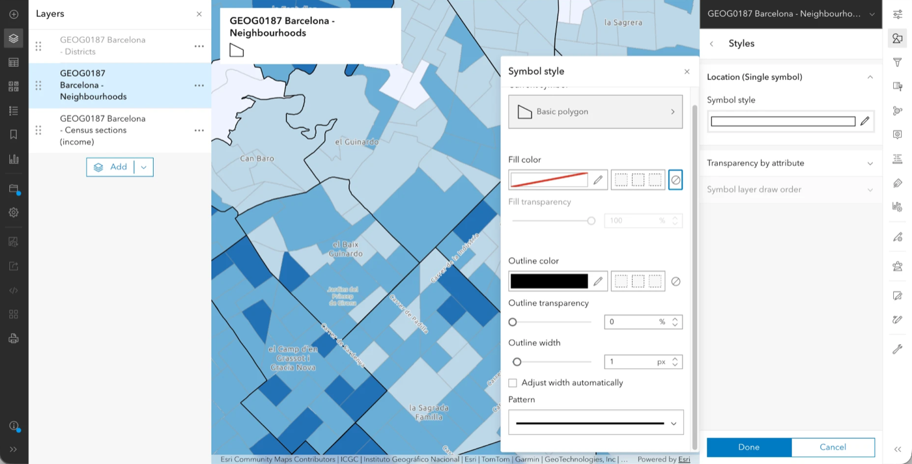
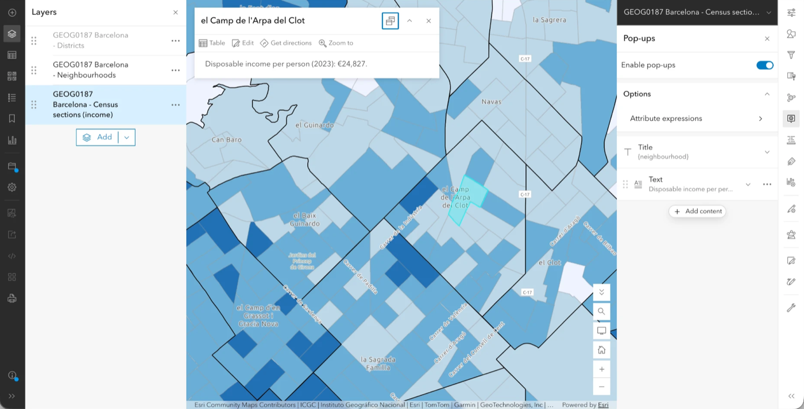

4 Using Secondary Data
So far, we have mapped data that you collected yourself. Most of the maps you will come across in geography, however, are made from secondary data: data collected by someone else, for their own purposes, and made available for others to reuse. This week, we will look at how to find such data, how to put them on a map, and how to decide whether they are fit for the question you want to answer. These are the skills behind the second GIS worksheet.
Sign in to ArcGIS Online with UCL SSO (see Open Map Viewer) and have a browser open. You will also need to know your fieldwork city: Barcelona if you went on the Catalonia trip, and London otherwise. Everyone does the same exercise, but with a different data pack.
4.1 Secondary data and where it comes from
Secondary data are produced by organisations such as statistical agencies, city councils, researchers or companies. Before you use any of them, you should find out five things. You will need the answers for your own referencing, as well as for the critical evaluation the worksheet asks for.
| Question | Example |
|---|---|
| What does it measure? | Disposable household income per person (€) |
| Who produced it, and why? | Barcelona City Council, to monitor inequality |
| How was it collected or estimated? | Estimated from tax records and surveys, not a count of every household |
| When does it refer to? | Income in 2023 |
| Where: for which areas? | 1,068 census sections |
You can usually find these answers in the dataset’s description or metadata page, which is one reason why you should always start there rather than with the map.
4.2 Choropleth maps
A choropleth map shades areas (polygons) by the value of a numerical variable, such as income, density or deprivation. Choropleth maps are easy to make, but they are also easy to get wrong, because each of the following choices changes what the map seems to say:
- The variable. Use rates or averages (income per person, % of residents) rather than raw totals (total income). Otherwise, areas with more people will look “bigger” for no interesting reason.
- The classes. The values are split into groups, each with its own colour. With equal intervals, the classes all have the same width; with quantiles, they all contain the same number of areas. The same data can look very different depending on which you choose.
- The colours. Use a single-hue ramp from light to dark for values that go from low to high, and avoid rainbow palettes.
- The scale. The same variable can look different for small areas than for large ones, because averaging over a large area hides the differences inside it. This is known as the modifiable areal unit problem (MAUP).
4.3 Add your data pack
Let us start by opening a new map (Map) and picking a quiet basemap. You can then follow the instructions for your city.
Remember how Map Viewer is laid out. The left-hand toolbar holds what is in your map (Add, Layers, Legend, Save and open); the right-hand toolbar holds the settings (Styles, Filter, Pop-ups) for whichever layer is selected. So we always work in two steps: first click the layer in Layers so that it is highlighted, and then click the tool on the right. The name at the top of the right-hand panel tells you which layer you are changing.
4.3.1 Barcelona
For Barcelona, the data pack consists of three layers that we have prepared for you:
- Click Add on the left-hand toolbar → Browse layers. Switch the drop-down at the top from My content to My organization, and search for
GEOG0187 Barcelona. - Add
GEOG0187 Barcelona - Census sections (income). This layer has one polygon per census section (the smallest statistical area), with the following attributes:disp_income_pc_2023_eur: disposable household income per person, 2023;mean_taxable_income_2024_eur: mean taxable income per unit of consumption, 2024;gini_2024_pct: the Gini index of tax income, 2024 (a higher value means a more unequal distribution).
- Add
GEOG0187 Barcelona - NeighbourhoodsandGEOG0187 Barcelona - Districts, which contain the boundaries of the 73 neighbourhoods and 10 districts. You will use these as context.

- Open Layers and check the order. The layer at the top of the list is drawn on top of the others, so the census sections should be at the bottom, with the neighbourhoods above them and the districts at the top. If the order is different, drag the layers by their handle (⠿) on the left.
Barcelona City Council, Open Data BCN (CC BY 4.0), based on the Idescat income account and the INE Household Income Distribution Atlas. Sections, neighbourhoods and districts come from the Administrative units of the city of Barcelona dataset.
4.3.2 London
For London, we will use the official deprivation data, which are already available in ArcGIS Online:
- Click Add on the left-hand toolbar → Browse layers. Switch the drop-down at the top to ArcGIS Online, and search for
Lower Level Super Output Area (LSOAs) IMD2025 (WGS84)from gis@communities.gov.uk. - Add the layer. It contains one polygon for every LSOA in England (small areas of about 1,500 residents), with the rank and decile of the Index of Multiple Deprivation (2025).
- To see only London, click the layer in Layers, then Filter on the right-hand toolbar → Add new. Set
LSOA Name(LSOA21NM) starts with the name of a borough (for exampleCamden). You can add more conditions with or for any other boroughs you want to include. - For context, and to compare scales, also add
Local Authority (Lower Tier) IMD2025 (WGS84)from the same publisher. This layer has one polygon per local authority, including the London boroughs (filter onLAD24NM). In Layers, drag it above the LSOAs, and give it no fill and a visible outline (see Compare scales for how).
Ministry of Housing, Communities & Local Government, English Indices of Deprivation 2025 (Open Government Licence v3.0).
4.4 Make the choropleth
Now that the data are on the map, we can turn the main layer into a choropleth:
- In Layers, click the main layer (the census sections, or the LSOAs for London), and then click Styles on the right-hand toolbar.
- Under Choose attributes, click + Field and pick the numerical variable:
disp_income_pc_2023_eurfor Barcelona,IMDRankfor London. - Under Pick a style, select Counts and Amounts (color) and click Style options.

- In Style options, switch on Classify data. Under Method, try Natural breaks, Quantile and Equal interval in turn, and set Number of classes to 5 each time. Look at how the map and the class limits change. Was your guess right?

- Choose a single-hue colour ramp. If the polygon outlines clutter the map, switch them off or make them thinner.
- Click Done, and open Legend on the left-hand toolbar. Does the legend make clear what is being shown, and in which units?
Finally, settle on one classification for your map and note down why you chose it: the worksheet asks you to justify this choice.
4.5 Compare scales
Next, let us see how much the picture depends on the size of the areas. For this, the boundary layers need to show only their outlines:
- In Layers, click the neighbourhoods layer, and then click Styles on the right-hand toolbar.
- A boundary layer has only one style, Location (Single symbol). Click Style options under it, and then the pencil next to Symbol style.
- Next to Fill color, click the no colour button (the circle with a line through it, on the far right). Keep a dark Outline color.
- Close the Symbol style panel and click Done.
- Do the same for the districts, with a thicker outline (for example 2 or 3 px under Outline width), so that you can tell the two apart.

- Zoom into one district.
4.6 Write the pop-up
A good pop-up does more than just show numbers. Let us set one up for the main layer:
First, switch off the pop-ups of the boundary layers. Otherwise, clicking on the map opens the neighbourhood or district instead of the census section. In Layers, click the neighbourhoods layer, then Pop-ups on the right-hand toolbar, and switch off Enable pop-ups. Do the same for the districts (or the boroughs, for London).
Now click the main layer in Layers, and then Pop-ups on the right-hand toolbar.
Click Title and set it to the neighbourhood (Barcelona) or the LSOA name (London).
By default, the pop-up also contains a Fields list with every attribute in the layer. Remove it by clicking the ⋯ next to Fields list → Delete.
Click Add content → Text, and then Edit text. Write the value with a clear name and unit, for example Disposable income per person (2023): €{disp_income_pc_2023_eur}. To avoid typos in the field name, insert it with the {} button in the text toolbar rather than typing it.
Below that, add a short interpretive note: one sentence on what the value means in context. Click OK.
Click on a few areas to check the result.

4.7 Evaluate your data
To finish, choose one variable from your data pack and answer the five questions from Secondary data and where it comes from. Then think of two or three limitations of the data. The following questions can help you with this:
- Scale: what is hidden when we show averages for areas?
- Completeness: are there areas missing? In the Barcelona layer,
mean_taxable_income_2024_euris empty for three sections. Why might these data be missing? - Method: is the variable a count, an estimate or the output of a model? (The London index gives ranks: what does a rank not tell you?)
- Time: does the data refer to the same year as your fieldwork?
- Bias: who is more likely to be missing from, or poorly represented in, the underlying data?
Keep your answers as notes, because you will need them for the worksheet.
4.8 Save your map
Save your map via Save and open → Save as, with a title such as GEOG0187 – Secondary data (without your name, as for the first map). You will build on this map for the second story map.
4.9 Before you leave
By the end of this session, you should have:
4.10 Find your own data
For the worksheet, you do not have to use the data pack above. If you would like to find your own data, the following are good places to start:
- ArcGIS Living Atlas, via Add → Browse layers → Living Atlas.
- Open Data BCN (opendata-ajuntament.barcelona.cat) for Barcelona.
- The London Datastore (data.london.gov.uk), the ONS (ons.gov.uk) and data.gov.uk for London and the UK.
Many datasets come as a table of values per area (for example, income by neighbourhood or by LSOA), with only the area’s name or code, and no boundaries. To map such a table, you would first need to join it to a boundary layer, which we do not cover in this module. So look for data that already include their geometry: a layer in ArcGIS Online or the Living Atlas, or a download offered as GeoJSON, a zipped shapefile, or a CSV with coordinates.
Whichever source you use, check the licence, and always record the name, publisher and year of the dataset for your references.
4.11 Troubleshooting
| Problem | What to try |
|---|---|
| The Barcelona layers do not appear | Search My organization, not My content, and check that you signed in through UCL SSO. Let staff know if the layers are missing. |
| The London layer is slow or looks wrong | Apply the borough filter first, and then zoom in. |
| The map looks like it is all one colour | Check the classification and the number of classes, and try quantile. |
| The legend shows odd numbers | Edit the legend labels, or round the values in the style options. |
| Clicking the map opens a neighbourhood, district or borough | Switch off Enable pop-ups for the boundary layers (see Write the pop-up). |
| The boundary layers hide the colours underneath | Set their fill to no colour (see Compare scales), and check that they are above the main layer in Layers. |
| A value is empty in the pop-up | The data may be missing for that area. If so, mention this in your evaluation. |